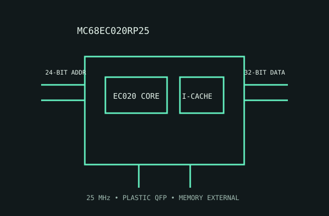

[ MOTOROLA 68000 FAMILY // EMBEDDED-CONTROL VARIANT ]
Motorola MC68EC020RP25
This 25 MHz EC020 retains the 68020 core while reducing address-space and system-management features for embedded designs.

MODEL IDENTIFICATION: MC68EC020RP25, 25 MHz embedded-control speed grade in plastic QFP package. Do not treat it as pin- or feature-equivalent to an MC68020.
Recorded specifications
| Model | MC68EC020RP25. |
|---|---|
| Generation | 68020-derived embedded-control generation; 1990s-era part. |
| Architecture / cores | Motorola 68020 instruction set; one 32-bit CPU core. EC denotes a reduced-feature embedded controller version. |
| Frequency / cache | 25 MHz speed grade; 256-byte instruction cache; no on-chip data cache. |
| Package / socket | RP plastic quad flat pack (QFP) package variant; fit only a board footprint with the matching EC020 pin assignment. |
| Power | 5 V nominal single supply. No modern TDP value; observe exact maximum supply-current and package-dissipation limits for the ordering code. |
| Memory / bus | 32-bit external data bus with a reduced 24-bit physical address interface (16 MiB range); external memory controller and RAM are required. |
| Board compatibility | Requires an EC020-aware board with matching QFP footprint, 5 V signaling and compatible bus timing. Full 68020 boards may rely on the missing full-address/MMU features. |
Compatibility notes
- EC means reduced capabilities: design memory decoding around its address width and do not assume a full 68020 MMU interface.
- Confirm the package drawing and socket orientation from the original board service manual before installing.
- Check clock generation, bus termination, RAM timing and reset sequencing at the board level.
Sources & further reading
- Motorola MC68020 User's Manual, 32-bit architecture (Bitsavers)Manufacturer manual archive for the 68020-derived instruction set and bus cycles.
- NXP-hosted legacy MC68020/EC020 technical manualManufacturer-maintained documentation for the 68020 family; use EC-specific electrical and package tables for this variant.